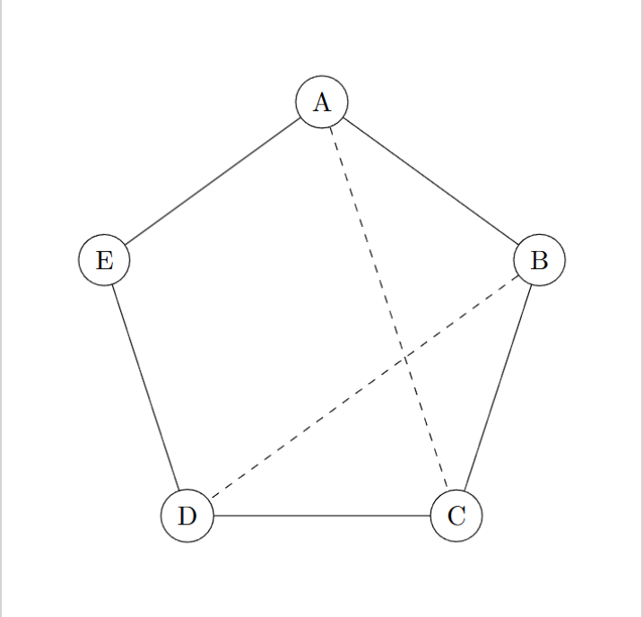
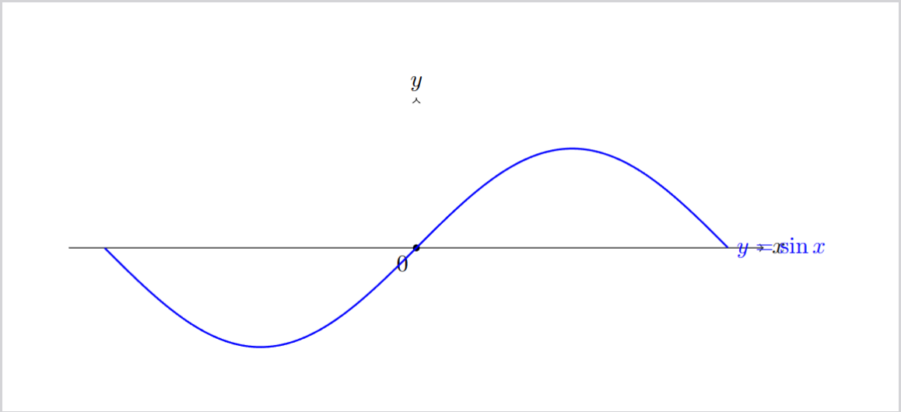
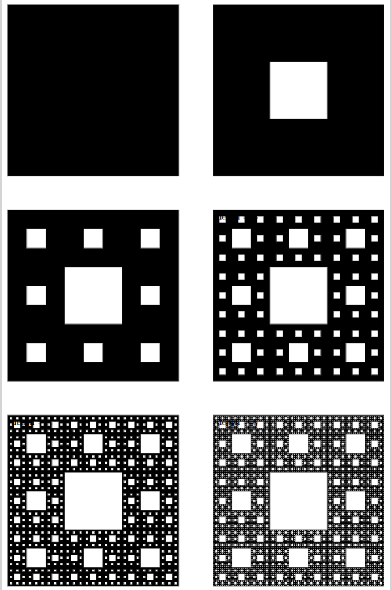

marp: true theme: default paginate: true size: 16:9 class: lead transition: slide math: mathjax backgroundColor: '#FFFDF6' color: '#1F1F1F' style: | /* Beaver цветовая схема с элементами Warsaw */
:root { --primary-color: #8B1A1A; --secondary-color: #B22222; --accent-color: #D2691E; --light-bg: #FFFDF6; --dark-text: #1F1F1F; --code-bg: #F5F5F5; }
/* СЛАЙДЫ ПО УМОЛЧАНИЮ - ПО ЛЕВОМУ КРАЮ / section { background-color: var(--light-bg); font-family: 'Helvetica Neue', Arial, sans-serif; padding: 10px 10px; text-align: left; / ГЛОБАЛЬНОЕ ВЫРАВНИВАНИЕ ПО ЛЕВОМУ КРАЮ */ }
/* ОТДЕЛЬНЫЙ КЛАСС ДЛЯ ЦЕНТРИРОВАННЫХ СЛАЙДОВ */ section.centered, section.center { text-align: center; }
/* Для lead слайда оставляем центрирование */ section.lead { text-align: center; padding-top: 80px; }
/* Специальный класс для центрированных списков */ section.centered ul, section.centered ol, section.center ul, section.center ol, section.lead ul, section.lead ol { display: inline-block; text-align: left; margin-left: auto; margin-right: auto; }
/* Warsaw заголовки */ h1 { color: var(--primary-color); border-bottom: 3px solid var(--secondary-color); padding-bottom: 15px; margin-bottom: 30px; font-size: 2.5em; font-weight: 700; text-shadow: 1px 1px 2px rgba(0,0,0,0.1); }
h2 { color: var(--secondary-color); border-left: 5px solid var(--accent-color); padding-left: 15px; margin-top: 40px; font-weight: 600; }
h3 { color: var(--accent-color); font-weight: 600; }
/* Списки - всегда по левому краю */ ul, ol { padding-left: 25px; text-align: left; }
li { margin: 8px 0; }
li::marker { color: var(--primary-color); }
/* Остальные стили без изменений */ p { line-height: 1.6; margin: 15px 0; }
code { background-color: var(--code-bg); color: var(--primary-color); padding: 2px 6px; border-radius: 3px; font-family: 'Monaco', 'Consolas', monospace; font-size: 0.9em; border: 1px solid #E0E0E0; }
pre { background-color: var(--code-bg); border: 1px solid #E0E0E0; border-left: 5px solid var(--accent-color); padding: 20px; border-radius: 0 5px 5px 0; overflow: auto; box-shadow: 0 2px 4px rgba(0,0,0,0.05); }
pre code { background-color: transparent; border: none; padding: 0; }
blockquote { border-left: 4px solid var(--accent-color); background-color: #F9F9F9; padding: 15px 20px; margin: 20px 0; font-style: italic; }
table { border-collapse: collapse; width: 100%; margin: 20px 0; box-shadow: 0 2px 3px rgba(0,0,0,0.1); }
th { background-color: var(--primary-color); color: white; padding: 12px; text-align: left; }
td { padding: 10px 12px; border-bottom: 1px solid #E0E0E0; }
tr:nth-child(even) { background-color: #F8F8F8; }
a { color: var(--secondary-color); text-decoration: none; border-bottom: 1px dotted var(--secondary-color); }
a:hover { border-bottom: 2px solid var(--secondary-color); }
hr { border: none; height: 2px; background: linear-gradient(to right, transparent, var(--primary-color), transparent); margin: 40px 0; }
section.lead h1 { color: var(--primary-color); border-bottom: 3px solid var(--secondary-color); padding-bottom: 15px; margin-top: 10px; /* Уменьшить верхний отступ заголовка */ margin-bottom: 20px; font-size: 2.5em; font-weight: 700; text-shadow: 1px 1px 2px rgba(0,0,0,0.1); }
section.lead h2 { border-left: none; color: var(--accent-color); font-weight: 400; }
footer { color: var(--accent-color); font-size: 0.9em; }
.warsaw-box { background: white; border: 2px solid var(--primary-color); border-radius: 5px; padding: 20px; margin: 20px 0; box-shadow: 0 3px 6px rgba(0,0,0,0.1); }
.alert { background-color: #FFF3CD; border-left: 5px solid var(--accent-color); padding: 15px; margin: 20px 0; }
Цель: освоить базовые приемы приемы TikZ для создания графиков.
Подключить пакет TikZ, использовать класс standalone для отдельных рисунков. Выполненые следующие визуализации:
Для каждого рисунка сгенерированы PDF
Пакет: tikz
Компиляция: pdflatex
Отдельные рисунки: \documentclass[border=...]{standalone}
Граф построен в полярных координатах по окружности. Задаем координаты:
\node[circle,draw] (A) at (90:\r) {A};
\node[circle,draw] (B) at (18:\r) {B};
\node[circle,draw] (C) at (-54:\r) {C};% узлы по окружности
\node[circle,draw] (D) at (-126:\r) {D};
\node[circle,draw] (E) at (162:\r) {E};
Задаем ребра и строим диагонали
\draw (A) -- (B);
\draw (B) -- (C);
\draw (C) -- (D);% рёбра
\draw (D) -- (E);
\draw (E) -- (A);
\draw[dashed] (A) -- (C);% диагонали
\draw[dashed] (B) -- (D);

\draw[->] (-3.5,0) -- (3.5,0) node[right] {$x$};
\draw[->] (0,-1.5) -- (0,1.5) node[above] {$y$};
\draw[domain=-3.14:3.14, samples=200]
plot (\x, {sin(\x r)})
node[right] {$y=\sin x$};
Параметры domain и samples управляют диапазоном и гладкостью кривой.
Суффикс r в sin(\x r) означает, что (\x) интерпретируется в радианах.
Подписи добавляются обычными node[...] { ... } прямо на пути.

Особенность LaTex такова, что рисовать каждый квадрат - переполнит память. Поэтому в упражнении использована рекурсия, так что квадраты на следующих итерациях просто копия квадратов на предыдущих итерациях.

\foreach \ii in {0,1,2}{%
\foreach \jj in {0,1,2}{%
\ifnum\ii=1\relax
\ifnum\jj=1\relax
\else
\pgfmathsetmacro{\nx}{#1 + \ii*\s}
\pgfmathsetmacro{\ny}{#2 + \jj*\s}
\carpetholes{\nx}{\ny}{\s}{\numexpr#4-1\relax}%
\fi
\else
\pgfmathsetmacro{\nx}{#1 + \ii*\s}
\pgfmathsetmacro{\ny}{#2 + \jj*\s}
\carpetholes{\nx}{\ny}{\s}{\numexpr#4-1\relax}%
Сборка PDF файлов. Один прогон компиляции, но 3 отдельных файла под каждый график.
pdflatex main8.1.tex
pdflatex main8.2.tex
pdflatex main8.3.tex
Подготовлено:
plot с domain/samples позволяет быстро рисовать функцииДокументация Beamer (User Guide)
Документация LaTeX Project
D. Tse, P. Viswanath — Fundamentals of Wireless Communication
A. Goldsmith — Wireless Communications
Репозиторий: https://github.com/PepsiMonster/SciWriting/tree/main/ex7